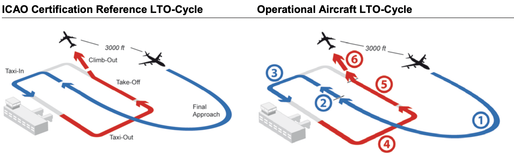

Appendix A — Fuel Burn Methodology
A.1 Fuel Flow Estimation - Look-Up Table Approach
At the time of writing no consolidated fuel burn methodology for operational performance benchmarking existed. The guidance material for the application of the GANP KPI16 suggests to apply average fuel burn estimates. To advance the state-of-the-art, PS and PRU established a look-up table on the basis of openly available mappings of aircraft type and (representative) engine.
With the ICAO Aircraft Engine Emissions Databank certification data for registered engines allowed for the identification of associated fuel flow indices for specific thrust levels per engine during the landing and take-off cycle (LTO). Further engine specific consumption data - primarily piston engines - were obtained from the database of the Federal Office for Civil Aviation of Switzerland. This dataset will be made available and further augmented with the help of the international benchmarking community. While the approach supported a good coverage of current aircraft types (about 90%), there was a need to make fuel burn assumptions for the remaining fleet.
Earlier work, c.f. EUROCONTROL Performance Review Unit and FAA Air Traffic Organization (2019), defined a benefit pool on the basis of a generic “average flight” (i.e. A320, 450NM leg). These values were taken as defaults for aircraft types not yet accounted for in the established data set.
For the estimation of the fuel burn in the en-route portion (climb-cruise-descent := CCD) it is proposed to apply an heuristic approach in future reports. This however requires for research and validation. The principles are laid out as follows:
- ICAO’s Carbon Emission Calculator Methodology supports the identification of average fuel burn on a per aerodrome pair.
- The calculator methodology estimates the fuel burn on the basis of pre-dominantly flown aircraft types, i.e. it can be assumed to be a fleet mix representative sample estimate.
- This estimate can be scaled for each arrival and compared to the additional time in terminal airspace.
An improvement to these estimates, i.e. estimating the fuel burn during surface operations and during the arrival phase, will be subject to further research.
A.2 Assumptions for Estimation of Taxi-in and Taxi-Out Fuel Burn

For this report, the operational LTO Cycle is defined as follows:
# | Phase | Comment |
|---|---|---|
1 | approach | 3000ft GND to actual landing |
2 | landing roll | touchdown to end rollout |
3 | taxi-in | taxi from end rollout/runway to stand |
4 | taxi-out | taxi from stand to runway/line-up position |
5 | take-off roll & initial climb | take-off roll to lift-off, including initial climb to 'throttle back' |
6 | climb-out | climb-out to 3000ft GND' |
Taxi-in is defined as the difference between the actual landing time (ALDT) and the actual in-block time (AIBT), i.e. \(\small TXIT = AIBT - ALDT\).
Conversely, taxi-out is defined as \(\small TXOT = ATOT - AOBT\).
Based on the LTO assumptions, TXIT comprises phases 2 and 3. For TXOT, phases 4 and 5 apply until the actual take-off/lift-off - strictly speaking without the initial climb to ‘throttle back’.
By convention, the standard ICAO LTO cycle assumes a specific “time-in-mode” (TIM) for each phase. Research has shown that the TIMs are not representative for many airports and operations. This report, thus, replaces the TIMs with the observed ground movement times, i.e. ALDT, AIBT, AOBT, ATOT.
The standard LTO cycle uses 0.7 min (42 sec) for the take-off roll and lift-off. From an operational perspective, this value is realistic for large (and heavy) aircraft or reduced thrust take-off (resulting in lower acceleration and longer take-off roll).
No provisions are made for decelaration during the landing roll (e.g. reverse thrust).
Per definition, the taxi-in and taxi-out indicator includes the landing roll or take-off roll. This report applies the following assumptions:
- taxi-in:
- inefficiencies during the taxi-in phase are primarily encountered following the landing roll;
- the landing roll is a systemic duration and can be broadly assumed to be constant per aircraft type, variations in terms of landing roll (shorter & longer durations) are equally distributed; and
- measured additional taxi-in times are therefore encountered after vacating the runway and during taxi to the stand/gate.
- taxi-out:
- inefficiencies during the taxiout phase are primarily encountered during taxi from the stand/gate to the holding point at the runway;
- line-up and take-off roll are a systemic duration and do not vary significantly per aircraft type, thus, can be considered equally distributed; and
- measured additional taxi-in times represent therefore the inefficiency during taxi-out.
While the additional time approach and assumptions eliminate the need to consider the landing-roll or take-off roll for the calculation of the additional fuel burn during these modes, the absolute fuel burn needs to considers the associated time-in-mode.
- For the landing, ICAO LTO assumes a 7% idle thrust and taxi setting.
Thus, the overall measured taxi-in time, i.e. \(\small TXIT = AIBT - ALDT\) is performed under the continuous 7% thrust setting. - For take-off operations, the take-off roll / lift-off is performed under 100% thrust setting.
Accordingly, the take-off roll duration needs to be deducted from the total observed taxi-out time.
Total taxi-out fuel is then calculated based on the reduced taxi-out phase at 7% thrust setting and the take-off roll at 100% thrust setting.
To account for missing data regarding aircraft types and/or respective reference engines, an estimate for the fuel burn for “similar” flights is calculated on the basis of complete data records. This similarity is based on aircraft wake turbulence category and engine type (e.g. light jet, medium jet, heavy/medium/light turboprop). This ensures that nuances of the fleet mix are captured and reduces the further overestimation by using general averages, etc.